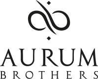

Aurum Brothers
A start-up focused on luxurious men's jewelry.
Aurum Brothers creates premium jewelry for men, with exceptional quality control and high end materials. In my role at Aurum Brothers, I had the opportunity to serve as a Customer Success Manager and Social Media & Marketing Manager, spearheading initiatives to enhance customer satisfaction and elevate the brand's online presence.
✓ Email Marketing - ✓ Email Copywriting
✓ Paid Advertisement - ✓ SEO/SEA Optimization
✓ Customer Success - ✓ Content Creation
✓ Influencer Marketing - ✓ Community Management


#1 Video - Ad Copy
Reach: 541,115 - Engagements: 3,097
Since the inception of Aurum Brothers, we’ve had a clear aim. We are on a mission to revive ancient crafting techniques, materials and stories to create a personalized piece of jewelry. When first thinking about the Varnos collection, we began a quest to discover the origins of jewelry and studied a multitude of ancient civilizations. Wherever we looked we saw that they all used gemstones, precious metals and cultural symbols. These elements define what fine jewelry is for humankind. Each Varnos is handcrafted by our Master Silversmith with all of these elements in mind. Shop our Varnos collection here:
#2 Video - Ad Copy
Reach: 237,152 - Engagements: 2,180
Only our most skilled and experienced craftsmen and latest technologies are able to produce your Abacus bracelet. Focus and patience is needed as our craftsmen select and match the stones for your Abacus bracelet, which contains up to 50% more beads than our other collections. Our Silversmith utilizes the latest technologies in order to decorate the delicate silver beads with extreme precision. Featuring high-end precious stones of quality and rarity that only 6mm beads can reliably offer. Opening up a whole new world of stones with dazzling colors and unique optical effects.
#3 Video - Ad Copy
Reach: 149,869 - Engagements: 2,432
Can you do better than these? You have 14 days to submit the absolute best wrist pic shot you can take! We’ve seen some fantastic shots and in celebration of our 4th Birthday, (tomorrow) YOU COULD WIN BIG. 1ST PRIZE – $750 Gift Voucher and a ‘One of a Kind’ custom bracelet. Our Head Stylist will help you pick ANY stone combination you want. Runners Up – We will pick THREE runners-up who can choose any Limited Edition stone that we currently have in stock. TO ENTER – Post your wrist pic in the comment section below or email it to info@aurumbrothers.com.
Feugiat aliquam
Nam sapien ante, varius in pulvinar vitae, rhoncus id massa. Donec varius ex in mauris ornare, eget euismod urna egestas. Etiam lacinia tempor ipsum, sodales porttitor justo. Aliquam dolor quam, semper in tortor eu, volutpat efficitur quam. Fusce nec fermentum nisl. Aenean erat diam, tempus aliquet erat.
Etiam iaculis nulla ipsum, et pharetra libero rhoncus ut. Phasellus rutrum cursus velit, eget condimentum nunc blandit vel. In at pulvinar lectus. Morbi diam ante, vulputate et imperdiet eget, fermentum non dolor. Ut eleifend sagittis tincidunt. Sed viverra commodo mi, ac rhoncus justo. Duis neque ligula, elementum ut enim vel, posuere finibus justo. Vivamus facilisis maximus nibh quis pulvinar. Quisque hendrerit in ipsum id tellus facilisis fermentum. Proin mauris dui, at vestibulum sit amet, auctor bibendum neque.